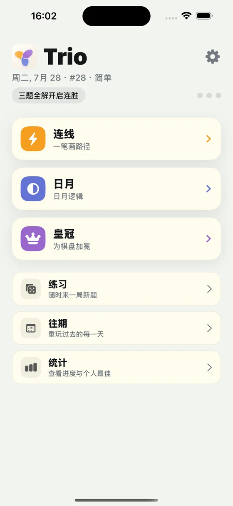
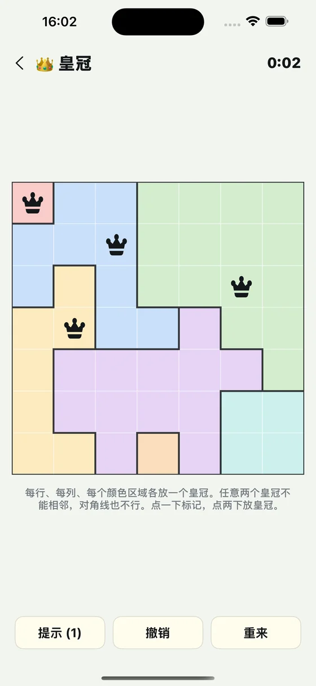

Trace 路径
从起点按数字顺序画出一条连续路线，并覆盖每个格子。
iPhone · iOS 17 或更高版本
一笔连路径、平衡太阳和月亮、在棋盘上放皇冠。全球玩家每天做同样三道题，每题只有一个解。
每日谜题免费，核心玩法支持离线。

三种谜题各有自己的规则，一周内的每日题目会逐渐变难。
从起点按数字顺序画出一条连续路线，并覆盖每个格子。
让每行每列的太阳和月亮数量相等，避免连续三个相同符号，同时遵循等号和叉号提示。
每行、每列和每个色块各放一顶皇冠，两顶皇冠不能相邻，包括对角线。
先观察位置很受限的色块。放下一顶皇冠后，就可以排除它所在行、列，以及四周相邻的格子。

核心玩法支持离线，无需账号。可以按需使用私人 iCloud 同步进度。
一次性购买可解锁往期题库、无限练习和提示，以及更详细的统计。
有。每日谜题都经过验证，每道题只有一个解。